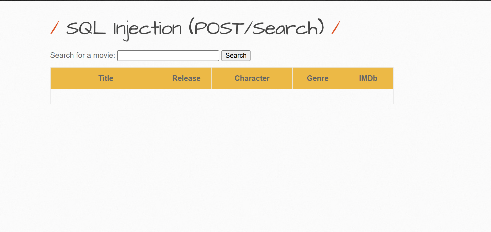
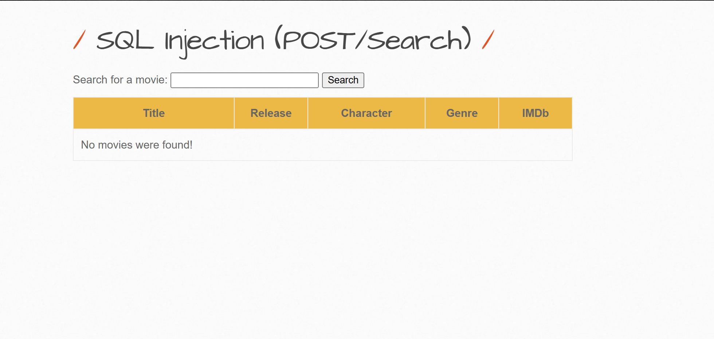
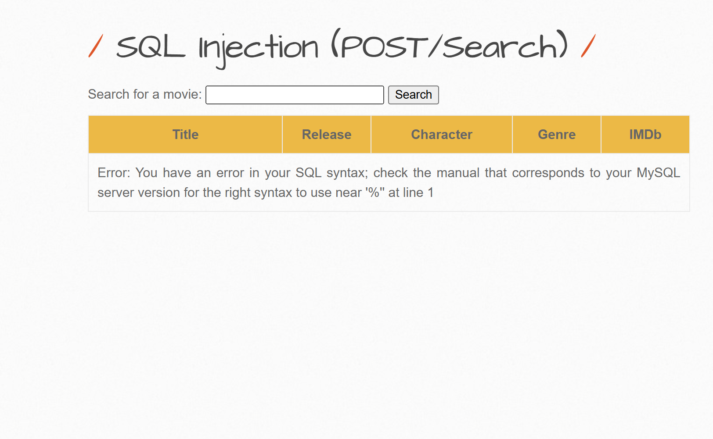
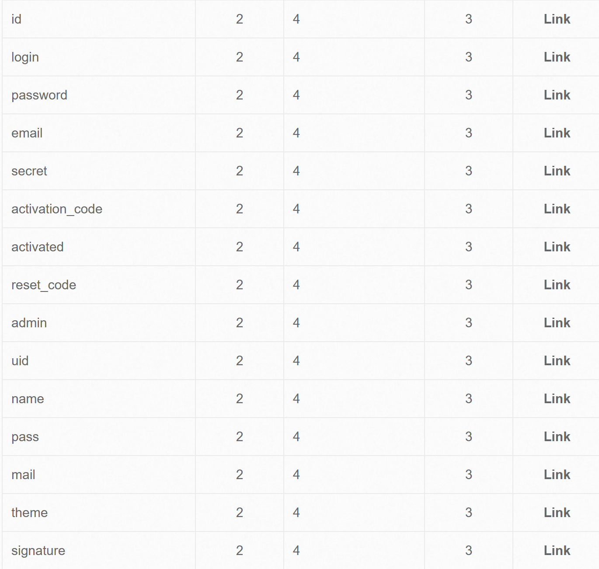
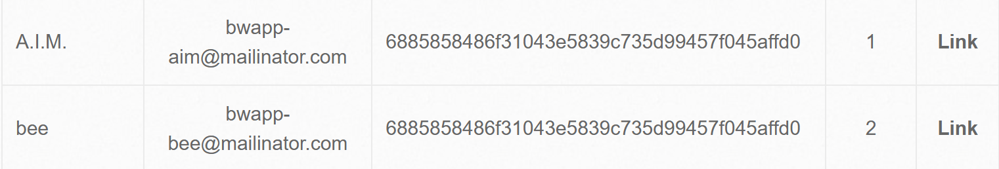
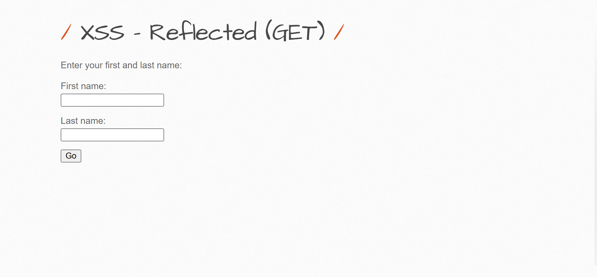
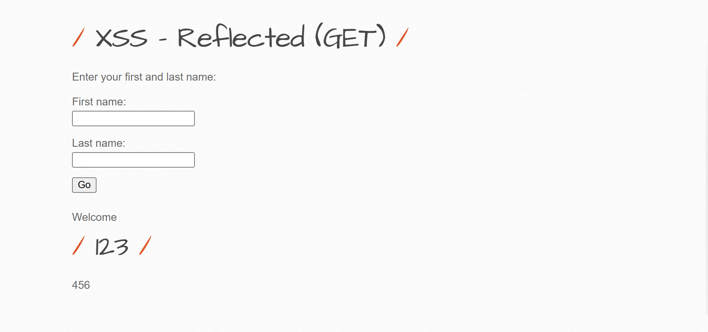
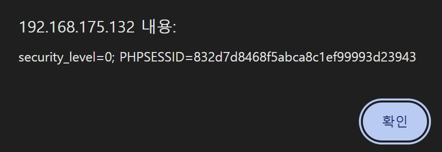
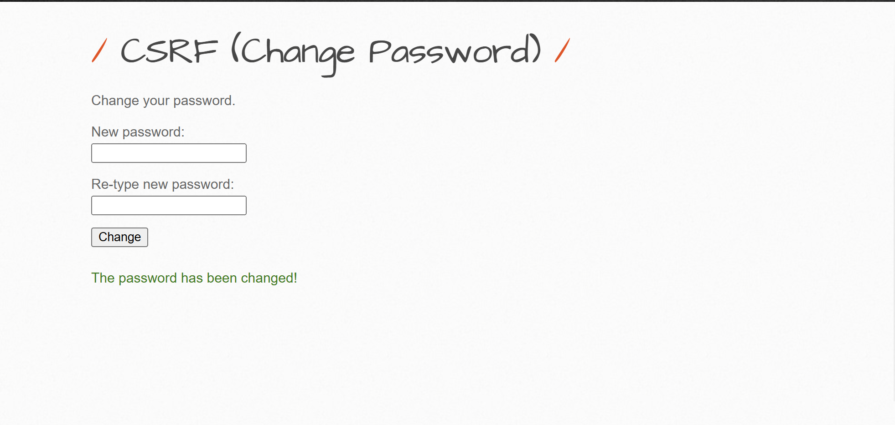

이제 bWAPP 를 구축하였으니 bWAPP 로
웹 해킹 기법들을 실습해보려고 한다.
실습할 기법들은 SQL Injection, XSS, CSRF 이다.
난이도는 모두 low 로 진행하였다.
SQL Injection (POST/Search)

다음 사이트는 영화 제목을 입력하면 해당하는 영화의 정보를 출력하는 사이트이다.
SQL Injection 이 작동하는지 알아보기 위해 작은따옴표(') 와 큰따옴표(") 를 넣어보았다.

큰따옴표를 사용한 경우 정상적인 모습을 볼 수 있다.

하지만 작은따옴표를 입력한 경우, SQL 오류가 발생하였다.
title=' ' 로 작은따옴표 안에 문자가 들어가야 하는데 작은따옴표가 들어가서 오류가 발생한 것이다.
다시 말해서 SQL Injection 이 가능하다는 뜻이다.
'union select all 숫자# 로 칼럼의 수를 알 수 있다.
이 사이트에서는 총 7개의 칼럼이 있다.
'union select 1, column_name, 2, 3, 4, 5, 6 from information_schema.columns where table_name='users'# 를 입력하여
테이블의 이름을 확인할 수 있다.

그 결과, id 나 password 등의 테이블들을 확인할 수 있었다.
'union select 1, login, email, id, password, 6, 7 from users -- 로 계정 정보를 알아볼 수 있다.

SQL Injection 대응 방안
SQL Injection 은 SQL 명령어를 사용하는 공격이다.
따라서 필터링을 통해 명령어를 입력하는 것을 막을 수 있다.
또한 DB 계정의 권환을 최소화하여, 계정이 탈취되더라도 관리자 권한을 얻지 못하게 막을 수도 있다.
XSS - Reflected (GET)

이름과 성을 입력하면 각각의 것을 출력하는 사이트이다.
한 번 123, 456을 입력해보았다.
그 결과 url 이 /bWAPP/xss_get.php?firstname=123&lastname=456&form=submit 로 변경되었다.
이번에는 JS 명령어가 가능한지 알아보기 위해 123, 456에서 <h1>123</h1>, 456으로 입력을 변경하였다.

h1 명령어가 작동하였고, url 에도 h1 이 들어갔다.
이런 경우 script 를 사용하여 XSS 공격을 할 수 있다.
<script>alert(document.cookie)</script> 로 쿠키 값을 확인해보는 명령어를 입력해보았다.

명령어로 쿠기 값을 바로 보이게 만들었다.
XSS 대응 방안
XSS 도 SQL Injection 과 같이 필터링을 사용하여 대응할 수 있다.
또한 HTML 태그가 필요한 경우 화이트 리스트를 만들어서
해당하는 태그만 허용하는 방식을 사용할 수도 있다.
CSRF (Change Password)

비밀번호를 변경하는 사이트이다.
한 번 비밀번호를 123으로 변경하였다.
그렇게 하니 url 이 /bWAPP/scrf_1.php?password_new=123&password_conf=123&action=change 가 되었다.
즉, url 에 비밀번호가 그대로 적혀있고 url 에 있는 비밀번호를 다른 것으로 변경하면 입력이 반영된다.
이를 활용하여 공격을 가할 수 있다.
예를 들어, 위 형식과 같이 비밀번호를 수정한 뒤에 url 을 피해자에게 여러 방법으로 보내서
피해자가 이 url 에 접속할 경우, 피해자 계정의 비밀번호가 공격자가 변경한 비밀번호로 변경된다.
그렇게 되면 피해자는 자신의 계정에 접속하지 못하는 불상사가 발생한다.
CSRF 대응 방안
사용자가 어떤 경로를 통해 웹 사이트에 접속하였는지 알 수 있는 흔적으로 Referrer 가 있다.
Referrer 를 통해 검증하여 올바른 경로로 접속한 것이 아니라면, 접속할 수 없도록 막는 방법이 있다.
또 서버에서 웹 사이트에 접속한 사용자에게 Captcha 같이 재인증을 요구하여
올바른 요청인지 확인하는 동시에 CSRF 를 막을 수 있다.
후기
취약점을 실습하면서 url 과 오류를 통해 정보가 알 수 있다는 점을 깨달았다.
너무 많은 정보를 주지 않도록 자세한 설명을 적지 않는 것이 좋다고 생각한다.
그리고 기존에 화이트 리스트, 필터링은 알고 있었지만
권한을 최소화하는 방식은 처음 알았다.
앞으로 대응 방안을 생각할 때, 권한에 대한 부분도 생각할 필요를 느꼈다.